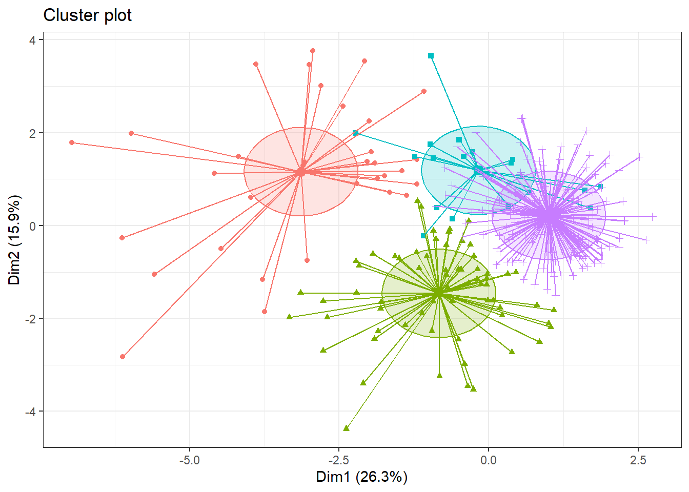
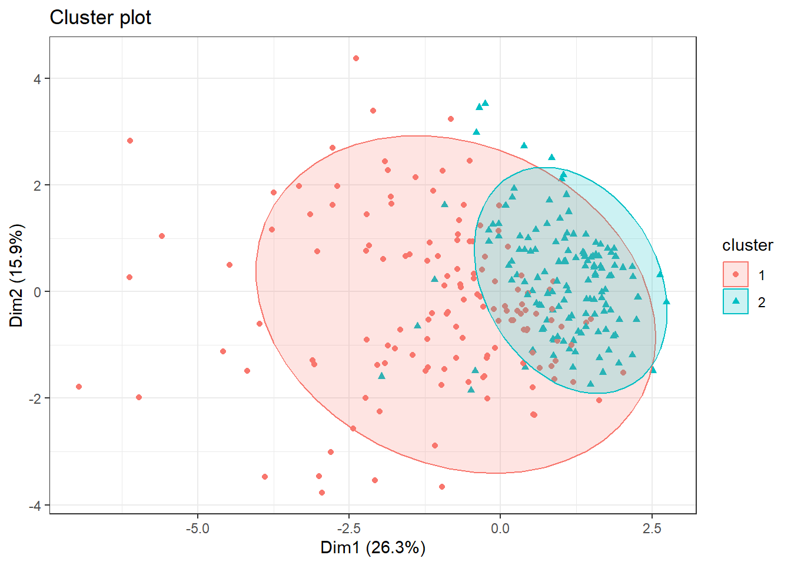
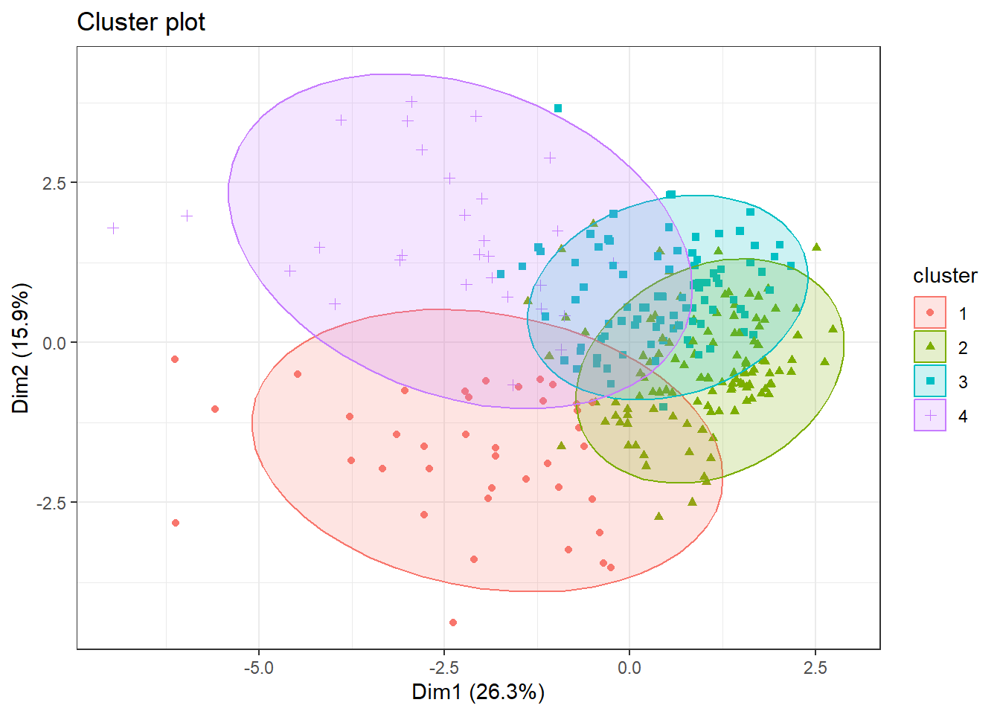
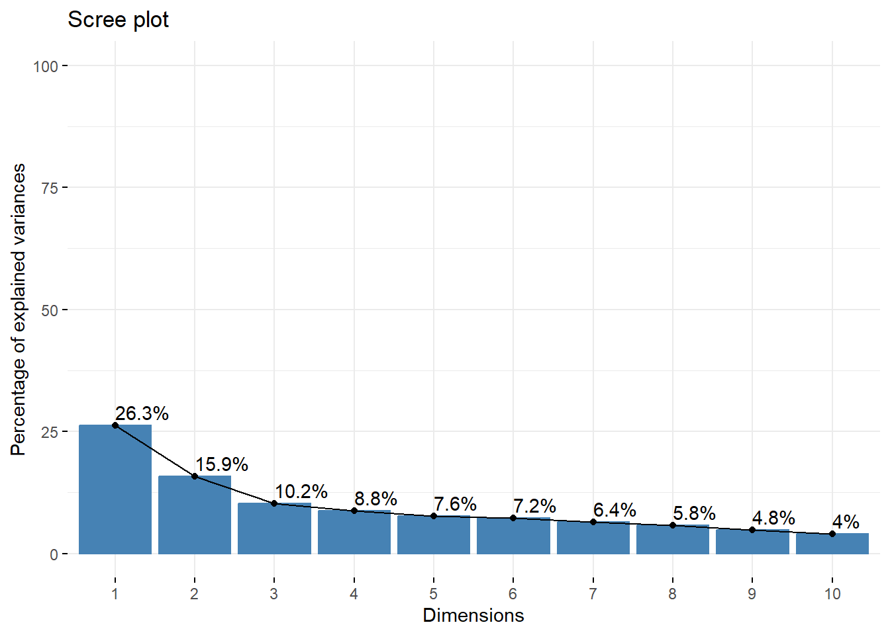
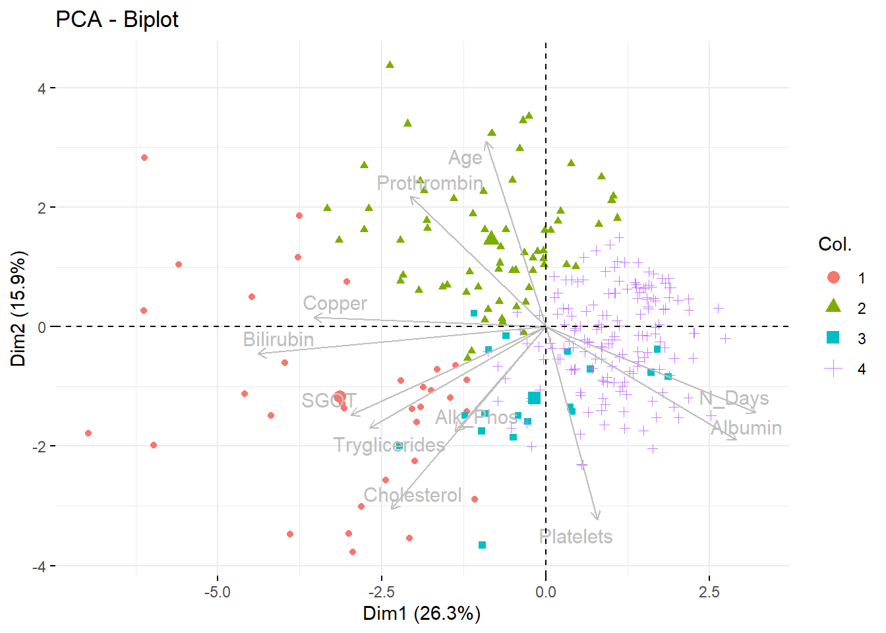
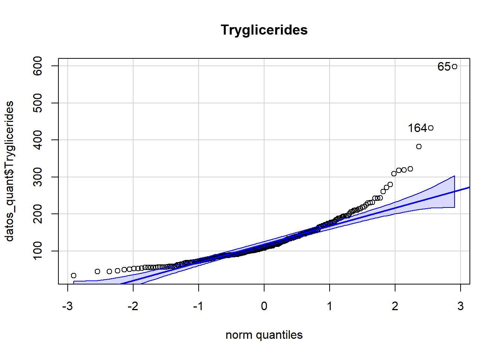
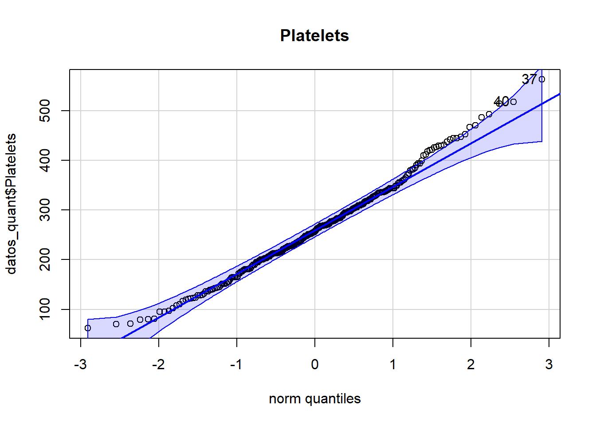
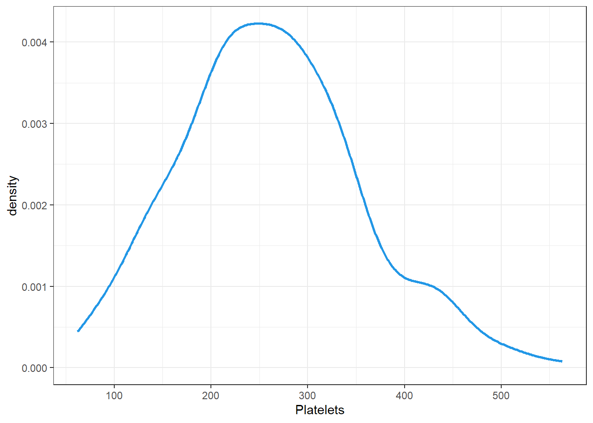
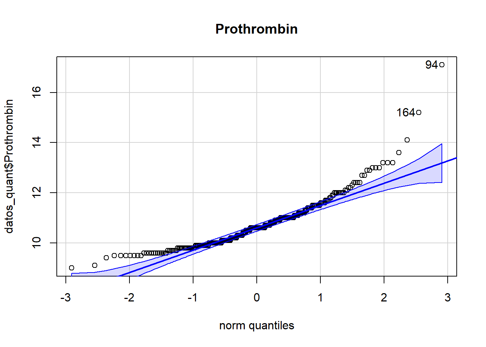

library(tidyverse)
library(dplyr)
library(GGally)
library(psych)
library(skimr)
library(fmsb)
library(mvnormtest)
library(car)
library(nortest)
library(fBasics)
library(ggplot2)Clustering
Presentación del problema
Vamos a tratar una base de datos relacionados con la predicción de riesgo de cirrosis. La cirrosis es una etapa tardía de la cicatrización (fibrosis) del hígado causada por muchas formas de enfermedades y afecciones hepáticas, como la hepatitis y el alcoholismo crónico.
Nuestro objetivo para este estudio sería:
- Estudiar algunos perfiles con riesgo de padecer cirrosis.
Los datos provienen de la página web Kaggle: Kaggle - Cirrhosis Prediction Dataset.
El dataset consta de 418 muestras, donde cada una representa una serie de características de un paciente. A cada paciente se le atribuyen 20 valores, uno de ellos es su ID, y el resto son variables relacionadas con la salud.
Antes de explicar cada variable, modifiquemos la tabla de datos para tenerla limpia en formato tidy.
Cargamos la librerías que utilizaremos
Convertir los datos en tidy
Cargamos la tabla de datos y la convertimos a tibble para facilitarnos la manipulación.
datos = read.csv("cirrhosis.csv", header = T)
datos = datos %>% as.tibble
glimpse(datos)Rows: 418
Columns: 20
$ ID <int> 1, 2, 3, 4, 5, 6, 7, 8, 9, 10, 11, 12, 13, 14, 15, 16, 1…
$ N_Days <int> 400, 4500, 1012, 1925, 1504, 2503, 1832, 2466, 2400, 51,…
$ Status <chr> "D", "C", "D", "D", "CL", "D", "C", "D", "D", "D", "D", …
$ Drug <chr> "D-penicillamine", "D-penicillamine", "D-penicillamine",…
$ Age <int> 21464, 20617, 25594, 19994, 13918, 24201, 20284, 19379, …
$ Sex <chr> "F", "F", "M", "F", "F", "F", "F", "F", "F", "F", "F", "…
$ Ascites <chr> "Y", "N", "N", "N", "N", "N", "N", "N", "N", "Y", "N", "…
$ Hepatomegaly <chr> "Y", "Y", "N", "Y", "Y", "Y", "Y", "N", "N", "N", "Y", "…
$ Spiders <chr> "Y", "Y", "N", "Y", "Y", "N", "N", "N", "Y", "Y", "Y", "…
$ Edema <chr> "Y", "N", "S", "S", "N", "N", "N", "N", "N", "Y", "N", "…
$ Bilirubin <dbl> 14.5, 1.1, 1.4, 1.8, 3.4, 0.8, 1.0, 0.3, 3.2, 12.6, 1.4,…
$ Cholesterol <int> 261, 302, 176, 244, 279, 248, 322, 280, 562, 200, 259, 2…
$ Albumin <dbl> 2.60, 4.14, 3.48, 2.54, 3.53, 3.98, 4.09, 4.00, 3.08, 2.…
$ Copper <int> 156, 54, 210, 64, 143, 50, 52, 52, 79, 140, 46, 94, 40, …
$ Alk_Phos <dbl> 1718.0, 7394.8, 516.0, 6121.8, 671.0, 944.0, 824.0, 4651…
$ SGOT <dbl> 137.95, 113.52, 96.10, 60.63, 113.15, 93.00, 60.45, 28.3…
$ Tryglicerides <int> 172, 88, 55, 92, 72, 63, 213, 189, 88, 143, 79, 95, 130,…
$ Platelets <int> 190, 221, 151, 183, 136, NA, 204, 373, 251, 302, 258, 71…
$ Prothrombin <dbl> 12.2, 10.6, 12.0, 10.3, 10.9, 11.0, 9.7, 11.0, 11.0, 11.…
$ Stage <int> 4, 3, 4, 4, 3, 3, 3, 3, 2, 4, 4, 4, 3, 4, 3, 3, 4, 4, 3,…Vamos a modificar el data set para que sea más cómodo a la hora de trabajar con él.
Transformamos las variables qualitativas en factor y, en las de Si o No (Y: Si, N: No) cambiamos los valores para que sea más ilustrativa y entendible. De la misma forma con el sexo cromosómico (F: Female, M: Male)
datos = datos %>%
mutate(Status = factor(Status, levels = c("C", "CL", "D"), labels = c("Cens",
"Cens_Trat", "Muerto")))
datos = datos %>%
mutate(Drug = Drug %>% as.factor)
datos = datos %>%
mutate(Sex = if_else(Sex == "F", "Female", "Male") %>% as.factor)
datos = datos %>%
mutate(Ascites = if_else(Ascites == "Y", "Si", "No") %>% as.factor)
datos = datos %>%
mutate(Hepatomegaly = if_else(Hepatomegaly == "Y", "Si", "No") %>% as.factor)
datos = datos %>%
mutate(Spiders = if_else(Spiders == "Y", "Si", "No") %>% as.factor)
datos = datos %>%
mutate(Edema = factor(Edema, levels = c("Y", "N", "S"), labels = c("Si", "No",
"Sin")))
datos = datos %>%
mutate(Stage = Stage %>% as.factor)Observemos que hay muestras que tienen valores desconocidos (NA). Veamos cuales son:
# A tibble: 142 × 20
ID N_Days Status Drug Age Sex Ascites Hepatomegaly Spiders Edema
<int> <int> <fct> <fct> <int> <fct> <fct> <fct> <fct> <fct>
1 6 2503 Muerto Placebo 24201 Fema… No Si No No
2 14 1217 Muerto Placebo 20535 Male Si Si No Si
3 40 4467 Cens D-penicil… 17046 Fema… No No No No
4 41 1350 Muerto D-penicil… 12285 Fema… No Si No No
5 42 4453 Cens Placebo 12307 Fema… No Si Si No
6 45 4025 Cens Placebo 15265 Fema… No No No No
7 49 708 Muerto Placebo 22336 Fema… No Si No No
8 53 1000 Muerto D-penicil… 24621 Fema… No Si No No
9 58 4459 Cens D-penicil… 16279 Male No No No No
10 70 3458 Cens D-penicil… 20600 Fema… No No No No
# ℹ 132 more rows
# ℹ 10 more variables: Bilirubin <dbl>, Cholesterol <int>, Albumin <dbl>,
# Copper <int>, Alk_Phos <dbl>, SGOT <dbl>, Tryglicerides <int>,
# Platelets <int>, Prothrombin <dbl>, Stage <fct>datos = na.omit(datos)
datos# A tibble: 276 × 20
ID N_Days Status Drug Age Sex Ascites Hepatomegaly Spiders Edema
<int> <int> <fct> <fct> <int> <fct> <fct> <fct> <fct> <fct>
1 1 400 Muerto D-peni… 21464 Fema… Si Si Si Si
2 2 4500 Cens D-peni… 20617 Fema… No Si Si No
3 3 1012 Muerto D-peni… 25594 Male No No No Sin
4 4 1925 Muerto D-peni… 19994 Fema… No Si Si Sin
5 5 1504 Cens_Trat Placebo 13918 Fema… No Si Si No
6 7 1832 Cens Placebo 20284 Fema… No Si No No
7 8 2466 Muerto Placebo 19379 Fema… No No No No
8 9 2400 Muerto D-peni… 15526 Fema… No No Si No
9 10 51 Muerto Placebo 25772 Fema… Si No Si Si
10 11 3762 Muerto Placebo 19619 Fema… No Si Si No
# ℹ 266 more rows
# ℹ 10 more variables: Bilirubin <dbl>, Cholesterol <int>, Albumin <dbl>,
# Copper <int>, Alk_Phos <dbl>, SGOT <dbl>, Tryglicerides <int>,
# Platelets <int>, Prothrombin <dbl>, Stage <fct>Ascites Hepatomegaly Spiders Edema Stage
Guardamos el dataset:
# write.table(datos, "cirrosis_tidy.csv")Cargamos los datos:
#datos <- read_csv("cirrosis_tidy.csv",
# cols(Ascites = col_factor(),
# Hepatomegaly = col_factor(),
# Spiders = col_factor(),
# Edema = col_factor(),
# Stage = col_factor()))
#glimpse(datos)El tibble resultante consta de 276 observaciones y 20 variables. Cada muestra representa un paciente al que se le ha extraido la siguiente información:
ID: Identificador únicoN_Days: Número de días entre el registro y la fecha de defunción, transplante o estudio analítico enJulio de 1986.Status: Estatus del paciente: C (Censurado), CL (censurado debido a tratamiento hepático), o D (Muerto)Drug: Tipo de fármaco: D-penicilamina o placeboAge: Edad [días]Sex: Sexo cromosómico: Male (hombre) o Female (Mujer)Ascites: Presencia de Ascitis No o SiHepatomegaly: Presencia de Hepatomegalia No o SiSpiders: Presencia de arañas vasculares No o SiEdema: Presencia de Edema: No (no hay edema y sin tratamiento diurético para el edema), Sin (presencia de edema sin diuréticos, o edema curado con diuréticos), o Si (edema a pesar del tratamiento con diuréticos)Bilirubin: Bilirrubina sérica [mg/dl]Cholesterol: Colesterol sérico [mg/dl]Albumin: Albúmina [g/dl]Copper: Cobre en orina [ug/day]Alk_Phos: Fosfatasa alcalina [U/liter]SGOT: SGOT [U/ml]Triglycerides: Triglicéridos [mg/dl]Platelets: Plaquetas por cúbico [ml/1000]Prothrombin: Tiempo de Protrombina [s]Stage: Estado histórico de la enfermedad (1, 2, 3, or 4)
Variables
Vamos a crear una tabla con la información de cada variable.
Empezamos por las cuantitativas
[1] 11 Unidad Media Desv Minimo Maximo Rango
N_Days Días 1979.167 1112.380 41.00 4556.00 4515.00
Age Días 18189.326 3843.556 9598.00 28650.00 19052.00
Bilirubin mg/dl 3.334 4.601 0.30 28.00 27.70
Cholesterol mg/dl 371.261 234.788 120.00 1775.00 1655.00
Albumin g/dl 3.517 0.405 1.96 4.40 2.44
Copper ug/día 100.768 88.269 4.00 588.00 584.00
Alk_Phos U/l 1996.612 2115.478 289.00 13862.40 13573.40
SGOT U/ml 124.119 56.720 28.38 457.25 428.87
Tryglicerides mg/dl 124.978 65.281 33.00 598.00 565.00
Platelets ml/1000 261.772 93.129 62.00 563.00 501.00
Prothrombin s 10.736 1.008 9.00 17.10 8.10Veamos ahora los datos cualitativos
Status Drug Sex Ascites Hepatomegaly
Cens :147 D-penicillamine:136 Female:242 No:257 No:134
Cens_Trat: 18 Placebo :140 Male : 34 Si: 19 Si:142
Muerto :111
Spiders Edema Stage
No:196 Si : 17 1: 12
Si: 80 No :234 2: 59
Sin: 25 3:111
4: 94 Estimación del vector de medias y la matriz de covarianza y correlación
Calculemos el vector de medias para cada variable cuantitativa
N_Days Age Bilirubin Cholesterol Albumin
1979.166667 18189.326087 3.333696 371.260870 3.516812
Copper Alk_Phos SGOT Tryglicerides Platelets
100.768116 1996.611594 124.119239 124.978261 261.771739
Prothrombin
10.735507 Veamos ahora la matriz de covarianza (a secas)
N_Days Age Bilirubin Cholesterol Albumin
N_Days 1232906.6244 -610129.4094 -2194.11504 -35582.06159 180.30136
Age -610129.4094 14719394.7270 1377.50822 -140841.57420 -371.54418
Bilirubin -2194.1150 1377.5082 21.09318 425.12744 -0.57906
Cholesterol -35582.0616 -140841.5742 425.12744 54925.84499 -6.37286
Albumin 180.3014 -371.5442 -0.57906 -6.37286 0.16326
Copper -35355.3853 27932.2350 186.35673 2569.06049 -8.55871
Alk_Phos 244885.5401 -160396.6451 1345.98758 75362.37161 -95.13112
SGOT -12011.1921 -26254.5595 110.50816 4736.62317 -4.53434
Tryglicerides -11855.3804 6177.4853 131.58769 4182.83900 -2.88761
Platelets 16424.4004 -53372.3893 -31.76224 4194.91462 7.45960
Prothrombin -143.5027 945.1888 1.53087 -7.87231 -0.08117
Copper Alk_Phos SGOT Tryglicerides
N_Days -35355.38527 244885.54010 -12011.19208 -11855.38043
Age 27932.23503 -160396.64509 -26254.55950 6177.48535
Bilirubin 186.35673 1345.98758 110.50816 131.58769
Cholesterol 2569.06049 75362.37161 4736.62317 4182.83900
Albumin -8.55871 -95.13112 -4.53434 -2.88761
Copper 7763.14188 35519.94834 1505.80848 1633.87539
Alk_Phos 35519.94834 4459032.05871 17364.40256 25121.02417
SGOT 1505.80848 17364.40256 3205.49665 497.89872
Tryglicerides 1633.87539 25121.02417 497.89872 4246.13721
Platelets -687.81380 28904.94902 -310.26872 613.53127
Prothrombin 18.95715 186.57104 3.98546 1.64534
Platelets Prothrombin
N_Days 16424.40036 -143.50266
Age -53372.38934 945.18878
Bilirubin -31.76224 1.53087
Cholesterol 4194.91462 -7.87231
Albumin 7.45960 -0.08117
Copper -687.81380 18.95715
Alk_Phos 28904.94902 186.57104
SGOT -310.26872 3.98546
Tryglicerides 613.53127 1.64534
Platelets 8641.56022 -18.04443
Prothrombin -18.04443 1.01301Análisis multivariante
ggpairs(datos_quant)

Análisis de normalidad multivariante
Con estos datos vamos a realizar nuestro estudio de normalidad multivariante.
Calculemos el vector de medias
Medias = colMeans(datos_quant)la matriz de covarianza:
S = cov(datos_quant)y la distancia de Mahalanobis:
d_Mahalanobis = apply(datos_quant, MARGIN = 1, function(x)
t(x - Medias)%*%solve(S)%*%(x - Medias))Una vez calculadas estas medidas, representemos los datos
plot(qchisq((1:nrow(datos_quant) - 1/2) / nrow(datos_quant), df = 3), sort(d_Mahalanobis), xlab = expression(paste("Cuantiles de la ", chi[20]^2)),ylab="Distancias ordenadas")
abline(a=0,b=1)
Vamos a realizar un test de normalidad. Utilizaremos Shapiro-Wilk:
mvnormtest::mshapiro.test(t(datos_quant))
Shapiro-Wilk normality test
data: Z
W = 0.83366, p-value < 2.2e-16Obtenemos un p-valor muy pequeño, prácticamente 0, entonces, rechazamos la hipótesis nula y concluimos que no hay normalidad multivariante, es decir, almenos una variable individual no se distribuye normalmente.
Veamos una por una si se distribuyen normalmente. Aplicaremos a cada variable el el test de Shapiro Wilks, siempre y cuando haya pocos datos repetidos, ya que es sensible a este hecho.
N-days
Observemos el qqplot:
qqPlot(datos$N_Days, main = "N_days")
[1] 38 30Observemos que en las colas encontramos muchas muestras que se salen de las bandas de confianza, por tanto es un indicador que de questa variable no siga una normal. Corroboremoslo con un test.
Miremos primero si hay observaciones repetidas:
length(datos_quant$N_Days)-length(unique(datos_quant$N_Days))[1] 9length(datos_quant$N_Days)[1] 276Notemos que hay datos repetidos, por realicemos unos cuantos tests de normalidad.
- Shapiro:shapiro.test(datos_quant$N_Days)
Shapiro-Wilk normality test
data: datos_quant$N_Days
W = 0.9707, p-value = 1.985e-05Nos ha salido un p-value = 1.985e-05, bastante pequeño, con lo que podemos rechazar la normalidad de esta variable.
- Anderson-Darlingad.test(datos_quant$N_Days)
Anderson-Darling normality test
data: datos_quant$N_Days
A = 1.9897, p-value = 4.437e-05Nos ha salido un p-value = 4.437e-05, bastante pequeño, con lo que también podemos rechazar la normalidad de esta variable.
Por tanto podemos concluir que la variable N_Days no sigue una distribución normal.
Age
Observemos el qqplot:
qqPlot(datos_quant$Age, main = "Age")
[1] 220 82Observemos que en las colas encontramos algunas muestras que se salen de las bandas de confianza, por tanto a simple vista no podemos asegurar nada.
Miremos primero si hay observaciones repetidas:
length(datos_quant$Age)-length(unique(datos_quant$Age))[1] 1Hay 1 valor que se repite, por tanto, podemos aplicar el shapiro test.
shapiro.test(datos_quant$Age)
Shapiro-Wilk normality test
data: datos_quant$Age
W = 0.9907, p-value = 0.07685Nos ha salido un p-value = 0.07685, por tanto estamos en la zona de penumbra y no podemos concluir nada. Necesitaríamos más datos para poder asegurar o negar la normalidad.
Realicemos otro test de normalidad.
ad.test(datos_quant$Age)
Anderson-Darling normality test
data: datos_quant$Age
A = 0.47535, p-value = 0.238Con el test de Anderson-Darling nos sale un p-value = 0.238 y con este test podríamos asegurar la normalidad, aunque nosotros cogeremos esta concluisión con pinzas.
Veamos la densidad de esta variable:
datos_quant %>%
ggplot(aes(x = Age)) +
geom_density(color = 4,
lwd = 1,
linetype = 1)+
theme_bw()
Tiene una forma parecida a una densidad normal, pero no podríamos asegurar esta tendencia.
Bilirubin
Observemos el qqplot:
qqPlot(datos_quant$Bilirubin, main = "Bilirubin")
[1] 127 137Observemos que claramente no seguirá una normal debido a que no hay casi ninguna observación dentro de las bandas de confianza. Respaldemos esta afermación con un test.
Miremos primero si hay observaciones repetidas:
length(datos_quant$Bilirubin)-length(unique(datos_quant$Bilirubin))[1] 194Hay 194 valores que se repiten, por tanto, no podemos aplicar el shapiro test. En su lugar apliquemos un test D’Agostino-Pearson:
dagoTest(datos_quant$Bilirubin)
Title:
D'Agostino Normality Test
Test Results:
STATISTIC:
Chi2 | Omnibus: 184.3264
Z3 | Skewness: 11.3328
Z4 | Kurtosis: 7.4762
P VALUE:
Omnibus Test: < 2.2e-16
Skewness Test: < 2.2e-16
Kurtosis Test: 7.638e-14 Nos ha salido un p-value < 2.2e-16 en los tres tests, podemos rechazar la normalidad de esta variable, resultado que esperábamos con el qqplot.
Cholesterol
Observemos el qqplot:
qqPlot(datos_quant$Cholesterol, main = "Cholesterol")
[1] 113 214Observemos que en esta variable ocurre lo mismo que con la anterior (Bilirubin).
Miremos primero si hay observaciones repetidas:
length(datos_quant$Cholesterol)-length(unique(datos_quant$Cholesterol))[1] 78Volvemos a tener muchos datos repetidos, por tanto aplicaremos otro test D’Agostino-Pearson:
dagoTest(datos_quant$Cholesterol)
Title:
D'Agostino Normality Test
Test Results:
STATISTIC:
Chi2 | Omnibus: 222.421
Z3 | Skewness: 12.2849
Z4 | Kurtosis: 8.4558
P VALUE:
Omnibus Test: < 2.2e-16
Skewness Test: < 2.2e-16
Kurtosis Test: < 2.2e-16 Nos ha salido un p-value < 2.2e-16 en los tres tests, podemos rechazar la normalidad de esta variable, resultado que volvíamos a esperábamos con el qqplot.
Albumin
Observemos el qqplot:
qqPlot(datos_quant$Albumin, main = "Albumin")
[1] 199 246Volvemos a observar que seguramente no seguirá una distribución normal debido a las observaciones que hay fuera de las bandas.
Miremos primero si hay observaciones repetidas:
length(datos_quant$Albumin)-length(unique(datos_quant$Albumin))[1] 151Volvemos a tener muchos datos repetidos, por tanto aplicaremos otro test D’Agostino-Pearson:
dagoTest(datos_quant$Albumin)
Title:
D'Agostino Normality Test
Test Results:
STATISTIC:
Chi2 | Omnibus: 20.7075
Z3 | Skewness: -3.8537
Z4 | Kurtosis: 2.4201
P VALUE:
Omnibus Test: 3.187e-05
Skewness Test: 0.0001164
Kurtosis Test: 0.01552 En este caso, los tres p-values son menores que 0.05, por tanto rechazamos la normalidad de esta variable.
Copper
Observemos el qqplot:
qqPlot(datos_quant$Copper, main = "Copper")
[1] 16 21Volvemos a observar que esta muestra no seguirá una distribución normal.
Miremos primero si hay observaciones repetidas:
length(datos_quant$Copper)-length(unique(datos_quant$Copper))[1] 124Como volvemos a tener muchos datos repetidos, aplicaremos otro test D’Agostino-Pearson:
dagoTest(datos_quant$Copper)
Title:
D'Agostino Normality Test
Test Results:
STATISTIC:
Chi2 | Omnibus: 150.0913
Z3 | Skewness: 10.0613
Z4 | Kurtosis: 6.9901
P VALUE:
Omnibus Test: < 2.2e-16
Skewness Test: < 2.2e-16
Kurtosis Test: 2.747e-12 Nos vuelven a salir un p-value bastante pequeño, con lo que volvemos a rechazar la normalidad de esta variable.
Alk_Phos
Observemos el qqplot:
qqPlot(datos_quant$Alk_Phos, main = "Alk_Phos")
[1] 48 33Tampoco seguirá una distribución normal.
Miremos primero si hay observaciones repetidas:
length(datos_quant$Alk_Phos)-length(unique(datos_quant$Alk_Phos))[1] 7No hay muchos datos repetido. Probemos de hacer un shapiro test:
shapiro.test(datos_quant$Alk_Phos)
Shapiro-Wilk normality test
data: datos_quant$Alk_Phos
W = 0.62114, p-value < 2.2e-16Nos sale un p-value < 2.2e-16 por tanto rechazaríamos la normalidad de esta variable. Reforcemos esta afirmación realizando un test D’Agostino-Pearson:
dagoTest(datos_quant$Alk_Phos)
Title:
D'Agostino Normality Test
Test Results:
STATISTIC:
Chi2 | Omnibus: 197.5003
Z3 | Skewness: 11.7012
Z4 | Kurtosis: 7.7835
P VALUE:
Omnibus Test: < 2.2e-16
Skewness Test: < 2.2e-16
Kurtosis Test: 7.105e-15 Efectivamente la variable no sigue una distribución normal.
SGOT
Observemos el qqplot:
qqPlot(datos_quant$SGOT, main = "SGOT")[1] 146 246Observemos que encontramos algunas observaciones fuera de las bandas de confianza, lo que indica que tampoco será normal.
Miremos primero si hay observaciones repetidas:
length(datos_quant$SGOT)-length(unique(datos_quant$SGOT))[1] 110Como volvemos a tener muchos datos repetidos, aplicaremos otro test D’Agostino-Pearson:
dagoTest(datos_quant$SGOT)
Title:
D'Agostino Normality Test
Test Results:
STATISTIC:
Chi2 | Omnibus: 95.1947
Z3 | Skewness: 7.7563
Z4 | Kurtosis: 5.919
P VALUE:
Omnibus Test: < 2.2e-16
Skewness Test: 8.66e-15
Kurtosis Test: 3.24e-09 Podemos concluir que esta variable tampoco sigue una distribución normal.
Tryglicerides
Observemos el qqplot:
qqPlot(datos_quant$Tryglicerides, main = "Tryglicerides")
[1] 65 164El resultado no es diferente a la de las otras variables. Confirmemos que no sigue una normal.
Miremos primero si hay observaciones repetidas:
length(datos_quant$Tryglicerides)-length(unique(datos_quant$Tryglicerides))[1] 133Aplicaremos otro test D’Agostino-Pearson:
dagoTest(datos_quant$Tryglicerides)
Title:
D'Agostino Normality Test
Test Results:
STATISTIC:
Chi2 | Omnibus: 180.5642
Z3 | Skewness: 10.6986
Z4 | Kurtosis: 8.1304
P VALUE:
Omnibus Test: < 2.2e-16
Skewness Test: < 2.2e-16
Kurtosis Test: 4.441e-16 Esta variable tampoco sigue una normal.
Platelets
Observemos el qqplot:
qqPlot(datos_quant$Platelets, main = "Platelets")
[1] 37 40Observemos que en este caso no podríamos asegurar la normalidad a simple vista, ya que hay algunas observaciones que si sobresalen de las bandas, pero la diferencia no es exaegrada. Veamos que dicen los tests de normalidad.
Miremos primero si hay observaciones repetidas:
length(datos_quant$Platelets)-length(unique(datos_quant$Platelets))[1] 83Como volvemos a tener muchos datos repetidos, aplicaremos otro test D’Agostino-Pearson:
dagoTest(datos_quant$Platelets)
Title:
D'Agostino Normality Test
Test Results:
STATISTIC:
Chi2 | Omnibus: 6.4744
Z3 | Skewness: 2.51
Z4 | Kurtosis: 0.4174
P VALUE:
Omnibus Test: 0.03927
Skewness Test: 0.01207
Kurtosis Test: 0.6764 Notemos que el p-value de Omnibus y Skewness se encuentran en la zona de penumbra. Por tanto, con estos dos p-values no podríamos afirmar nada.
En cambio el p-value de Kurtosis, es bastante grande y sí podríamos aceptar la normalidad de esta variable.
Veamos que conclusiones saca el test de Anderson-Darling:
ad.test(datos_quant$Platelets)
Anderson-Darling normality test
data: datos_quant$Platelets
A = 0.6102, p-value = 0.1116Nos sale un p-value = 0.1116. No es un p-value muy grande, por tanto la normalidad de esta variable se podría aceptar con cuidado.
Veamos la densidad de la variable:
datos_quant %>%
ggplot(aes(x = Platelets)) +
geom_density(color = 4,
lwd = 1,
linetype = 1)+
theme_bw()
Notemos que no podemos asegurar la normalidad ya que respecto a la cola derecha no se observa tendencia normal.
Prothrombin
Observemos el qqplot:
qqPlot(datos_quant$Prothrombin, main = "Prothrombin")
[1] 94 164Observamos que seguramente esta variable tampoco seguirá una normal.
Miremos primero si hay observaciones repetidas:
length(datos_quant$Prothrombin)-length(unique(datos_quant$Prothrombin))[1] 235La mayoría de observaciones se repiten. Aplicaremos otro test D’Agostino-Pearson:
dagoTest(datos_quant$Prothrombin)
Title:
D'Agostino Normality Test
Test Results:
STATISTIC:
Chi2 | Omnibus: 124.1459
Z3 | Skewness: 8.8365
Z4 | Kurtosis: 6.7869
P VALUE:
Omnibus Test: < 2.2e-16
Skewness Test: < 2.2e-16
Kurtosis Test: 1.145e-11 Notemos que los p-values son muy pequeños, por tanto no hay normalidad. No obstante, al tener casi todas las muestras repetidas entre sí, el test de normalidad podría estar sobreajustado, o simplemente que esta variable tiene poco rango.
Conclusiones
Conluimos que
no hay normalidad multivariante
no hay normalidad univariante en ninguna variable quantitativa excepto en
AgeyPlateletsque tienen una ligera tendencia a parecerse a una normal, aunque no hay evidencias fuertes para afirmar con seguridad que presenten un comportamiento normal.